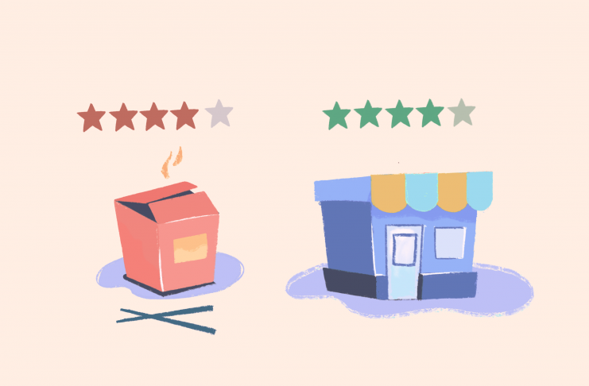

Deepinder Goyal | Febuary 17, 2020 | 2 min read
[India] Call for feedback- Restaurant Ratings v2
Tell us what do you feel about the upcoming Restaurant Rating improvements on Zomato.
Deepinder Goyal | Febuary 17, 2020 | 2 min read
Tell us what do you feel about the upcoming Restaurant Rating improvements on Zomato.
Sameep Arora | December 2, 2019 | 6 min read
A walk through the process by building the all new Search and Discovery experience at Zomato

Tania Kohli | November 8, 2019 | 5 min read
Huddle by Zomato is an event that is focused on building a stronger tech community in the Delhi NCR region.